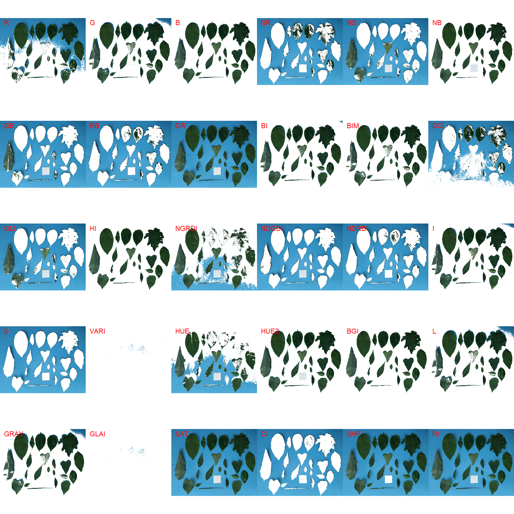
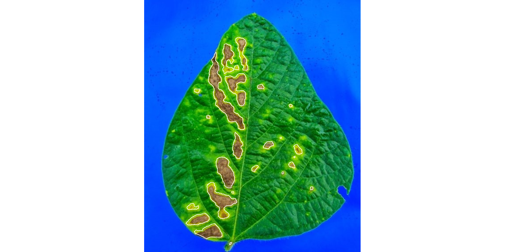

Packages
library(tidyverse) # data manipulation and plots
library(pliman) # plant image analysis
library() # concordance correlation coefficient
Installing pliman
To install the released version of pliman from CRAN type:
install.packages("pliman")
The latest development version of pliman can be installed from the GitHub repository. The installation process requires the devtools package, which needs to be installed first. If you are a Windows user, you should also first download and install the latest version of Rtools.
if(!require(devtools)) install.packages("devtools")
After devtools properly installed, you can install pliman by running the following code. Please, note that the installation will also download the dependencies required to run the package.
devtools::install_github("TiagoOlivoto/pliman")
Them, load pliman by running
library(pliman)
Image manipulation
Importing images
library(pliman)
soy <- image_import("data/soy_grains.jpg")
soy2 <- image_import("data/soy_grains_2.jpg")
To import a list of images, the argument img_pattern of the function image_import() is used. All images that matches the pattern name are imported into a list.
# set a temporary working directory
setwd("data")
soy_list <- image_import(img_pattern = "soy_")
names(soy_list)
[1] "soy_exported.jpg" "soy_grains.jpg" "soy_grains_2.jpg"
Displaying images
Single images are displayed with image_show(). For combining images, the function image_combine() is used. Users can inform either a comma-separated list of objects or list of objects of class Image.
# Single images
image_show(soy)
# Combine images
image_combine(soy, soy2)

# Combine images
image_combine(soy_list)

Manipulating images
pliman provides useful functions to perform image transformation of unique images or list of images based on the EBImage package. All the functions shown here works natturaly either with a single image or a list of images.
Rezise an image
image_resize() is used to resize an image. The argument rel_size can be used to resize the image by relative size. For example, setting rel_size = 50 to an image of width 1280 x 720, the new image will have a size of 640 x 360. This is useful to speed up the time of analysis such as those computed with count_objects and symptomatic_area().
image_dimension(soy)
----------------------
Image dimension
----------------------
Width : 1834
Height: 1305
soy_resized <- image_resize(soy, rel_size = 50)
image_dimension(soy_resized)
----------------------
Image dimension
----------------------
Width : 917
Height: 652
Auto crop
Cropping images is useful to remove noises from image edge, as well as to reduce the size of images before processing. pliman provides auto-cropping of images with image_autocrop().
soy_crop <- image_autocrop(soy)
soy_crop2 <- image_autocrop(soy, edge = 30) # add 30 pixels around objects' area
image_combine(soy, soy_crop, soy_crop2, ncol = 3)

Rotate an image
image_rotate() is used to rotates the image clockwise by the given angle.
soy_rotated <- image_rotate(soy, angle = 45)
image_show(soy_rotated)

Horizontal and vertical reflection
image_hreflect() and image_vreflect() performs vertical and horizontal reflection of images, respectively.
soy_hrefl <- image_hreflect(soy)
soy_vrefl <- image_vreflect(soy)
image_combine(soy, soy_hrefl, soy_vrefl, ncol = 3)

Horizontal and vertical conversion
image_horizontal() and image_vertical() converts (if needed) an image to a horizontal or vertical image, respectively.
soy_h <- image_horizontal(soy)
soy_v <- image_vertical(soy)
image_combine(soy, soy_h, soy_v, ncol = 3)

Filter, blur, and contrast
{ manipulate5,r fig.width=10, fig.height=10} soy_filter <- image_filter(soy) soy_blur <- image_blur(soy) soy_contrast <- image_contrast(soy) image_combine(soy, soy_filter, soy_blur, soy_contrast)
Exporting images
To export images to the current directory, use the function image_export().
image_export(soy, "soy_exported.jpg")
Combining functions
pliman offers the possibility of combining functions with the new R base forward pipe operator |>. In this example, I will show how it is possible to
library(pliman)
setwd("data") # temporary directory
a <- image_import(img_pattern = "soy_grains")
image_combine(a)

# reduce resolution, autocrop, vertical rotation,
# create a binary image, export
a |>
image_resize(rel_size = 50) |>
image_autocrop() |>
image_vertical() |>
image_binary(index = "NB", show_image = FALSE) |>
image_combine()
Image segmentation
In pliman the following functions can be used to segment an image.
image_binary() to produce a binary (black and white) imageimage_segment() to produce a segmented image (image objects and a white background).
Both functions segment the image based on the value of some image index, which may be one of the RGB bands or any operation with these bands. Internally, these functions call image_index() to compute these indexes.
Here, we use the argument index" to test the segmentation based on the RGB and their normalized values. Users can also provide your index with the argument my_index.
soy <- image_import("data/segmentation/soybean_touch.jpg")
image_show(soy)
# Compute the indexes
indexes <- image_index(soy, index = c("R, G, B, NR, NG, NB"))

# Create a histogram with the RGB values
plot(indexes)

In this example, we can see the distribution of the RGB values (first row) and the normalized RGB values (second row). The two peaks represent the grains (smaller peak) and the blue background (larger peak). The clearer the difference between these peaks, the better will the image segmentation.
The function image_segmentation() is used to segment images using image indexes. In our example, we will use the same indexes computed below to see how the image is segmented. The output of this function can be used as input in the function count_objets().
segmented <- image_segment(soy, index = c("R, G, B, NR, NG, NB"))

It seems that the “NB” index provided better segmentation. “R” and “NR” resulted in an inverted segmented image, i.e., the grains were considered as background and the remaining as ‘selected’ image. To circumvent this problem, we can use the argument invert in those functions.
image_segment(soy,
index = c("R, NR"),
invert = TRUE)

Producing a binary image
We can also produce a binary image with image_binary(). Just for curiosity, we will use the indexes "R" and "NB". By default, image_binary() rescales the image to 30% of the size of the original image to speed up the computation time. Use the argument resize = FALSE to produce a binary image with the original size.
binary <- image_binary(soy, index = c("R, NB"))

# original image size
image_binary(soy,
index = c("R, NB"),
resize = FALSE)

Leaf area
Leaf area using leaf_area()
In this example, an image with five tree leaves and a yellow template with a know area of 4 cm\(^2\) is used.
img <- image_import("data/leaf_area/la_pattern.JPG")
leaf <- image_import("data/leaf_area/la_leaf.jpg")
tmpl <- image_import("data/leaf_area/la_temp.jpg")
background <- image_import("data/leaf_area/la_back.jpg")
# Combine the images
image_combine(img, leaf, tmpl, background)

To compute the leaf area in the image, the following function is used. Then, get_measures() is used to get the values given in the scale of area_template argument. The other measures (namely, perimeter, radius_mean, radius_min, and radius_max) are given as pixels.
area <-
leaf_area(img = img,
img_leaf = leaf,
img_template = tmpl,
img_background = background,
area_template = 4,
text_col = "white")

# Get leaf measures
get_measures(area)
-----------------------------------------
Total leaf area : 141.848
Average leaf area: 23.641
-----------------------------------------
Leaf area using count_objects()
An alternative way to compute leaf area in pliman is by using count_objects(). This function has the advantage of using image segmentation based on several indexes (e.g., red, green, and blue values). So, sample palettes don’t need to be informed. Let us compute the leaf area of leaves with this approach. First, we use image_segmentation() to identify candidate indexes to segment the image.
leaves <- image_import("data/leaf_area/la_leaves.JPG")
image_show(leaves)

image_segment(leaves, index = "all")

G (Green) and NB (Normalized Blue) are two possible candidates to segment the leaves from the background. We will use the NB index here (default option in count_objects()). The measurement of the leaf area in this approach is given with the following two steps.
- Count the number of objects (leaves in this case)
Here, we need to combine count_objects() and plot_measures() to obtain the identification of each leaf, allowing the further adjustment of the leaf area.
count <- count_objects(leaves)
--------------------------------------------
Number of objects: 6
--------------------------------------------
statistics area perimeter
min 4332.00 253.0000
mean 26704.17 533.5000
max 44763.00 727.0000
sd 16286.76 197.2265
sum 160225.00 3201.0000
plot_measures(count)

- Adjust the leaf area by the area of the known object
The function get_measures() is used to adjust the leaf area using the object 6.
area <-
get_measures(count,
id = 6,
area ~ 4)
-----------------------------------------
measures corrected with:
object id: 6
area : 4
-----------------------------------------
Total : 147.946
Average : 24.658
-----------------------------------------
area
# plot the area to the segmented image
image_segment(leaves, index = "NB", verbose = FALSE)
plot_measures(area, measure = "area")

# compute the difference between the two methods
142.9 -(sum(area$area) - 4)
[1] -1.046
The weakness of computing leaf area with count_objects() is that it is needed to first obtain the object identification to know which object (leaf) is the sample with a known area. This object id may change from image to image, especially from images with a different number of leaves. Thus, batch computing is difficult in this case.
Disease severity
Single images
# temporary directory
setwd("data/disease_severity/soybean")
# import images
img <- image_import("sev_leaf.jpg")
healthy <- image_import("sev_healthy.jpg")
symptoms <- image_import("sev_sympt.jpg")
background <- image_import("sev_back.jpg")
image_combine(img, healthy, symptoms, background, ncol = 4)

symptomatic_area(img = img,
img_healthy = healthy,
img_symptoms = symptoms,
img_background = background,
show_image = TRUE)

Batch processing
leaf images
# temporary directory
setwd("data/disease_severity/soybean_rust")
soy_leaves <- image_import(img_pattern = "1")
image_combine(soy_leaves, ncol = 5)

Severity measurement
system.time(
soy_rust <-
symptomatic_area(img_pattern = "1",
img_symptoms = "soy_rust",
img_healthy = "soy_leaf",
img_background = "soy_bg",
dir_original = "data/disease_severity/soybean_rust",
dir_processed = "data/disease_severity/soybean_rust/processed",
save_image = TRUE,
show_image = FALSE,
parallel = TRUE)
)
Image processing using multiple sessions (10). Please wait.
usuário sistema decorrido
0.13 0.02 38.16
soy_rust
Processed images
# temporary directory
setwd("data/disease_severity/soybean_rust/processed")
soy_leaves <- image_import(img_pattern = "proc")
image_combine(soy_leaves, ncol = 5)

JSBBbmFseXNpcyANCg0KYGBge3IgZ2xvYmFsX29wdGlvbnMsIGluY2x1ZGUgPSBGQUxTRX0NCmtuaXRyOjpvcHRzX2NodW5rJHNldChjYWNoZSA9IFRSVUUsIGNvbW1lbnQgPSAiIikNCg0KYGBgDQoNCiMgUGFja2FnZXMNCmBgYHtyIHBhY2thZ2VzfQ0KbGlicmFyeSh0aWR5dmVyc2UpICMgZGF0YSBtYW5pcHVsYXRpb24gYW5kIHBsb3RzDQpsaWJyYXJ5KHBsaW1hbikgIyBwbGFudCBpbWFnZSBhbmFseXNpcw0KbGlicmFyeSgpICMgY29uY29yZGFuY2UgY29ycmVsYXRpb24gY29lZmZpY2llbnQNCmBgYA0KDQoNCiMgSW5zdGFsbGluZyBwbGltYW4NCg0KVG8gaW5zdGFsbCB0aGUgcmVsZWFzZWQgdmVyc2lvbiBvZiBgcGxpbWFuYCBmcm9tIENSQU4gdHlwZToNCmBgYHtyIGV2YWwgPSBGQUxTRX0NCmluc3RhbGwucGFja2FnZXMoInBsaW1hbiIpDQpgYGANCg0KDQpUaGUgbGF0ZXN0IGRldmVsb3BtZW50IHZlcnNpb24gb2YgYHBsaW1hbmAgY2FuIGJlIGluc3RhbGxlZCBmcm9tIHRoZSBHaXRIdWIgcmVwb3NpdG9yeS4gVGhlIGluc3RhbGxhdGlvbiBwcm9jZXNzIHJlcXVpcmVzIHRoZSBgZGV2dG9vbHNgIHBhY2thZ2UsIHdoaWNoIG5lZWRzIHRvIGJlIGluc3RhbGxlZCBmaXJzdC4gSWYgeW91IGFyZSBhIFdpbmRvd3MgdXNlciwgeW91IHNob3VsZCBhbHNvIGZpcnN0IGRvd25sb2FkIGFuZCBpbnN0YWxsIHRoZSBsYXRlc3QgdmVyc2lvbiBvZiBbUnRvb2xzXShodHRwczovL2NyYW4uci1wcm9qZWN0Lm9yZy9iaW4vd2luZG93cy9SdG9vbHMvKS4NCg0KYGBge3IsIGV2YWw9RkFMU0V9DQppZighcmVxdWlyZShkZXZ0b29scykpIGluc3RhbGwucGFja2FnZXMoImRldnRvb2xzIikNCg0KYGBgDQoNCkFmdGVyIGBkZXZ0b29sc2AgcHJvcGVybHkgaW5zdGFsbGVkLCB5b3UgY2FuIGluc3RhbGwgYHBsaW1hbmAgYnkgcnVubmluZyB0aGUgZm9sbG93aW5nIGNvZGUuIFBsZWFzZSwgbm90ZSB0aGF0IHRoZSBpbnN0YWxsYXRpb24gd2lsbCBhbHNvIGRvd25sb2FkIHRoZSBkZXBlbmRlbmNpZXMgcmVxdWlyZWQgdG8gcnVuIHRoZSBwYWNrYWdlLg0KDQpgYGB7ciwgZXZhbD1GQUxTRX0NCmRldnRvb2xzOjppbnN0YWxsX2dpdGh1YigiVGlhZ29PbGl2b3RvL3BsaW1hbiIpDQpgYGANCg0KDQpUaGVtLCBsb2FkIGBwbGltYW5gIGJ5IHJ1bm5pbmcgDQpgYGB7ciBsb2FkLCBtZXNzYWdlPUZBTFNFLCB3YXJuaW5nPUZBTFNFfQ0KDQpsaWJyYXJ5KHBsaW1hbikNCmBgYA0KDQoNCiMgSW1hZ2UgbWFuaXB1bGF0aW9uDQoNCiMjIEltcG9ydGluZyBpbWFnZXMNCg0KYGBge3IgaW1wb3J0MSB9DQpsaWJyYXJ5KHBsaW1hbikNCnNveSA8LSBpbWFnZV9pbXBvcnQoImRhdGEvc295X2dyYWlucy5qcGciKQ0Kc295MiA8LSBpbWFnZV9pbXBvcnQoImRhdGEvc295X2dyYWluc18yLmpwZyIpDQoNCmBgYA0KDQoNClRvIGltcG9ydCBhIGxpc3Qgb2YgaW1hZ2VzLCB0aGUgYXJndW1lbnQgYGltZ19wYXR0ZXJuYCBvZiB0aGUgZnVuY3Rpb24gYGltYWdlX2ltcG9ydCgpYCBpcyB1c2VkLiBBbGwgaW1hZ2VzIHRoYXQgbWF0Y2hlcyB0aGUgcGF0dGVybiBuYW1lIGFyZSBpbXBvcnRlZCBpbnRvIGEgbGlzdC4NCg0KYGBge3IgaW1wb3J0MiB9DQojIHNldCBhIHRlbXBvcmFyeSB3b3JraW5nIGRpcmVjdG9yeQ0Kc2V0d2QoImRhdGEiKQ0Kc295X2xpc3QgPC0gaW1hZ2VfaW1wb3J0KGltZ19wYXR0ZXJuID0gInNveV8iKQ0KbmFtZXMoc295X2xpc3QpDQpgYGANCg0KDQoNCg0KIyMgRGlzcGxheWluZyBpbWFnZXMNClNpbmdsZSBpbWFnZXMgYXJlIGRpc3BsYXllZCB3aXRoIGBpbWFnZV9zaG93KClgLiBGb3IgY29tYmluaW5nIGltYWdlcywgdGhlIGZ1bmN0aW9uIGBpbWFnZV9jb21iaW5lKClgIGlzIHVzZWQuIFVzZXJzIGNhbiBpbmZvcm0gZWl0aGVyIGEgY29tbWEtc2VwYXJhdGVkIGxpc3Qgb2Ygb2JqZWN0cyBvciBsaXN0IG9mIG9iamVjdHMgb2YgY2xhc3MgYEltYWdlYC4NCg0KYGBge3IgZGlzcGxheTEsIGZpZy53aWR0aD0xMn0NCiMgU2luZ2xlIGltYWdlcw0KaW1hZ2Vfc2hvdyhzb3kpDQoNCiMgQ29tYmluZSBpbWFnZXMNCmltYWdlX2NvbWJpbmUoc295LCBzb3kyKQ0KDQojIENvbWJpbmUgaW1hZ2VzDQppbWFnZV9jb21iaW5lKHNveV9saXN0KQ0KDQoNCmBgYA0KDQoNCiMjIE1hbmlwdWxhdGluZyBpbWFnZXMNCg0KDQpgcGxpbWFuYCBwcm92aWRlcyB1c2VmdWwgZnVuY3Rpb25zIHRvIHBlcmZvcm0gaW1hZ2UgdHJhbnNmb3JtYXRpb24gb2YgdW5pcXVlIGltYWdlcyBvciBsaXN0IG9mIGltYWdlcyBiYXNlZCBvbiB0aGUgW0VCSW1hZ2UgcGFja2FnZV0oaHR0cHM6Ly93d3cuYmlvY29uZHVjdG9yLm9yZy9wYWNrYWdlcy9yZWxlYXNlL2Jpb2MvdmlnbmV0dGVzL0VCSW1hZ2UvaW5zdC9kb2MvRUJJbWFnZS1pbnRyb2R1Y3Rpb24uaHRtbCkuIEFsbCB0aGUgZnVuY3Rpb25zIHNob3duIGhlcmUgd29ya3MgbmF0dHVyYWx5IGVpdGhlciB3aXRoIGEgc2luZ2xlIGltYWdlIG9yIGEgbGlzdCBvZiBpbWFnZXMuDQoNCiMjIyBSZXppc2UgYW4gaW1hZ2UNCmBpbWFnZV9yZXNpemUoKWAgaXMgdXNlZCB0byByZXNpemUgYW4gaW1hZ2UuIFRoZSBhcmd1bWVudCBgcmVsX3NpemVgIGNhbiBiZSB1c2VkIHRvIHJlc2l6ZSB0aGUgaW1hZ2UgYnkgcmVsYXRpdmUgc2l6ZS4gRm9yIGV4YW1wbGUsIHNldHRpbmcgYHJlbF9zaXplID0gNTBgIHRvIGFuIGltYWdlIG9mIHdpZHRoIDEyODAgeCA3MjAsIHRoZSBuZXcgaW1hZ2Ugd2lsbCBoYXZlIGEgc2l6ZSBvZiA2NDAgeCAzNjAuIFRoaXMgaXMgdXNlZnVsIHRvIHNwZWVkIHVwIHRoZSB0aW1lIG9mIGFuYWx5c2lzIHN1Y2ggYXMgdGhvc2UgY29tcHV0ZWQgd2l0aCBgY291bnRfb2JqZWN0c2AgYW5kIGBzeW1wdG9tYXRpY19hcmVhKClgLg0KDQpgYGB7ciBtYW5pcHVsYXRlMX0NCmltYWdlX2RpbWVuc2lvbihzb3kpDQpzb3lfcmVzaXplZCA8LSBpbWFnZV9yZXNpemUoc295LCByZWxfc2l6ZSA9IDUwKQ0KaW1hZ2VfZGltZW5zaW9uKHNveV9yZXNpemVkKQ0KYGBgDQoNCiMjIyBBdXRvIGNyb3ANCkNyb3BwaW5nIGltYWdlcyBpcyB1c2VmdWwgdG8gcmVtb3ZlIG5vaXNlcyBmcm9tIGltYWdlIGVkZ2UsIGFzIHdlbGwgYXMgdG8gcmVkdWNlIHRoZSBzaXplIG9mIGltYWdlcyBiZWZvcmUgcHJvY2Vzc2luZy4gYHBsaW1hbmAgcHJvdmlkZXMgYXV0by1jcm9wcGluZyBvZiBpbWFnZXMgd2l0aCBgaW1hZ2VfYXV0b2Nyb3AoKWAuIA0KDQpgYGB7ciBtYW5pcHVsYXRlMiwgZmlnLndpZHRoPTIwfQ0Kc295X2Nyb3AgPC0gaW1hZ2VfYXV0b2Nyb3Aoc295KQ0Kc295X2Nyb3AyIDwtIGltYWdlX2F1dG9jcm9wKHNveSwgZWRnZSA9IDMwKSAjIGFkZCAzMCBwaXhlbHMgYXJvdW5kIG9iamVjdHMnIGFyZWENCmltYWdlX2NvbWJpbmUoc295LCBzb3lfY3JvcCwgc295X2Nyb3AyLCBuY29sID0gMykNCmBgYA0KDQoNCiMjIyBSb3RhdGUgYW4gaW1hZ2UNCmBpbWFnZV9yb3RhdGUoKWAgaXMgdXNlZCB0byByb3RhdGVzIHRoZSBpbWFnZSBjbG9ja3dpc2UgYnkgdGhlIGdpdmVuIGFuZ2xlLg0KDQpgYGB7ciBtYW5pcHVsYXRlMyB9DQpzb3lfcm90YXRlZCA8LSBpbWFnZV9yb3RhdGUoc295LCBhbmdsZSA9IDQ1KQ0KaW1hZ2Vfc2hvdyhzb3lfcm90YXRlZCkNCmBgYA0KDQoNCiMjIyBIb3Jpem9udGFsIGFuZCB2ZXJ0aWNhbCByZWZsZWN0aW9uDQpgaW1hZ2VfaHJlZmxlY3QoKWAgYW5kIGBpbWFnZV92cmVmbGVjdCgpYCBwZXJmb3JtcyB2ZXJ0aWNhbCBhbmQgaG9yaXpvbnRhbCByZWZsZWN0aW9uIG9mIGltYWdlcywgcmVzcGVjdGl2ZWx5Lg0KDQpgYGB7ciBtYW5pcHVsYXRlNCwgZmlnLndpZHRoPTIwfQ0Kc295X2hyZWZsIDwtIGltYWdlX2hyZWZsZWN0KHNveSkNCnNveV92cmVmbCA8LSBpbWFnZV92cmVmbGVjdChzb3kpDQppbWFnZV9jb21iaW5lKHNveSwgc295X2hyZWZsLCBzb3lfdnJlZmwsIG5jb2wgPSAzKQ0KYGBgDQoNCg0KDQojIyMgSG9yaXpvbnRhbCBhbmQgdmVydGljYWwgY29udmVyc2lvbg0KYGltYWdlX2hvcml6b250YWwoKWAgYW5kIGBpbWFnZV92ZXJ0aWNhbCgpYCBjb252ZXJ0cyAoaWYgbmVlZGVkKSBhbiBpbWFnZSB0byBhIGhvcml6b250YWwgb3IgdmVydGljYWwgaW1hZ2UsIHJlc3BlY3RpdmVseS4NCg0KYGBge3IgbWFuaXB1bGF0ZTUsIGZpZy53aWR0aD0yMH0NCnNveV9oIDwtIGltYWdlX2hvcml6b250YWwoc295KQ0Kc295X3YgPC0gaW1hZ2VfdmVydGljYWwoc295KQ0KaW1hZ2VfY29tYmluZShzb3ksIHNveV9oLCBzb3lfdiwgbmNvbCA9IDMpDQoNCmBgYA0KDQoNCiMjIyBGaWx0ZXIsIGJsdXIsIGFuZCBjb250cmFzdA0KDQpgYGB7IG1hbmlwdWxhdGU1LHIgZmlnLndpZHRoPTEwLCBmaWcuaGVpZ2h0PTEwfQ0Kc295X2ZpbHRlciA8LSBpbWFnZV9maWx0ZXIoc295KQ0Kc295X2JsdXIgPC0gaW1hZ2VfYmx1cihzb3kpDQpzb3lfY29udHJhc3QgPC0gaW1hZ2VfY29udHJhc3Qoc295KQ0KaW1hZ2VfY29tYmluZShzb3ksIHNveV9maWx0ZXIsIHNveV9ibHVyLCBzb3lfY29udHJhc3QpDQpgYGANCg0KDQoNCiMjIyBFeHBvcnRpbmcgaW1hZ2VzDQpUbyBleHBvcnQgaW1hZ2VzIHRvIHRoZSBjdXJyZW50IGRpcmVjdG9yeSwgdXNlIHRoZSBmdW5jdGlvbiBgaW1hZ2VfZXhwb3J0KClgLg0KDQpgYGB7ciBleHBvcnR9DQppbWFnZV9leHBvcnQoc295LCAic295X2V4cG9ydGVkLmpwZyIpDQpgYGANCg0KIyMjIENvbWJpbmluZyBmdW5jdGlvbnMNCnBsaW1hbiBvZmZlcnMgdGhlIHBvc3NpYmlsaXR5IG9mIGNvbWJpbmluZyBmdW5jdGlvbnMgd2l0aCB0aGUgbmV3IFIgYmFzZSBmb3J3YXJkIHBpcGUgb3BlcmF0b3IgYHw+YC4gSW4gdGhpcyBleGFtcGxlLCBJIHdpbGwgc2hvdyBob3cgaXQgaXMgcG9zc2libGUgdG8gDQoNCmBgYHtyIGNvbWJpbmluZ2Z1bmN0LCBmaWcud2lkdGg9MTAsIGZpZy5oZWlnaHQ9NX0NCmxpYnJhcnkocGxpbWFuKQ0Kc2V0d2QoImRhdGEiKSAjIHRlbXBvcmFyeSBkaXJlY3RvcnkNCmEgPC0gaW1hZ2VfaW1wb3J0KGltZ19wYXR0ZXJuID0gInNveV9ncmFpbnMiKQ0KaW1hZ2VfY29tYmluZShhKQ0KDQojIHJlZHVjZSByZXNvbHV0aW9uLCBhdXRvY3JvcCwgdmVydGljYWwgcm90YXRpb24sDQojIGNyZWF0ZSBhIGJpbmFyeSBpbWFnZSwgZXhwb3J0DQphIHw+DQogIGltYWdlX3Jlc2l6ZShyZWxfc2l6ZSA9IDUwKSB8Pg0KICBpbWFnZV9hdXRvY3JvcCgpIHw+DQogIGltYWdlX3ZlcnRpY2FsKCkgfD4NCiAgaW1hZ2VfYmluYXJ5KGluZGV4ID0gIk5CIiwgc2hvd19pbWFnZSA9IEZBTFNFKSB8Pg0KICBpbWFnZV9jb21iaW5lKCkNCmBgYA0KDQoNCg0KIyBJbWFnZSBzZWdtZW50YXRpb24NCg0KSW4gYHBsaW1hbmAgdGhlIGZvbGxvd2luZyBmdW5jdGlvbnMgY2FuIGJlIHVzZWQgdG8gc2VnbWVudCBhbiBpbWFnZS4NCg0KKiBgaW1hZ2VfYmluYXJ5KClgIHRvIHByb2R1Y2UgYSBiaW5hcnkgKGJsYWNrIGFuZCB3aGl0ZSkgaW1hZ2UNCiogYGltYWdlX3NlZ21lbnQoKWAgdG8gcHJvZHVjZSBhIHNlZ21lbnRlZCBpbWFnZSAoaW1hZ2Ugb2JqZWN0cyBhbmQgYSB3aGl0ZSBiYWNrZ3JvdW5kKS4NCg0KQm90aCBmdW5jdGlvbnMgc2VnbWVudCB0aGUgaW1hZ2UgYmFzZWQgb24gdGhlIHZhbHVlIG9mIHNvbWUgaW1hZ2UgaW5kZXgsIHdoaWNoIG1heSBiZSBvbmUgb2YgdGhlIFJHQiBiYW5kcyBvciBhbnkgb3BlcmF0aW9uIHdpdGggdGhlc2UgYmFuZHMuIEludGVybmFsbHksIHRoZXNlIGZ1bmN0aW9ucyBjYWxsIGBpbWFnZV9pbmRleCgpYCB0byBjb21wdXRlIHRoZXNlIGluZGV4ZXMuIA0KDQpIZXJlLCB3ZSB1c2UgdGhlIGFyZ3VtZW50IGBpbmRleCJgIHRvIHRlc3QgdGhlIHNlZ21lbnRhdGlvbiBiYXNlZCBvbiB0aGUgUkdCIGFuZCB0aGVpciBub3JtYWxpemVkIHZhbHVlcy4gVXNlcnMgY2FuIGFsc28gcHJvdmlkZSB5b3VyIGluZGV4IHdpdGggdGhlIGFyZ3VtZW50IGBteV9pbmRleGAuDQoNCmBgYHtyIHNlZ21lbnRhdGlvbjEgfQ0KDQpzb3kgPC0gaW1hZ2VfaW1wb3J0KCJkYXRhL3NlZ21lbnRhdGlvbi9zb3liZWFuX3RvdWNoLmpwZyIpDQppbWFnZV9zaG93KHNveSkNCg0KDQpgYGANCg0KYGBge3Igc2VnbWVudGF0aW9uMiwgZmlnLndpZHRoPTEwLCBmaWcuaGVpZ2h0PTV9DQojIENvbXB1dGUgdGhlIGluZGV4ZXMNCmluZGV4ZXMgPC0gaW1hZ2VfaW5kZXgoc295LCBpbmRleCA9IGMoIlIsIEcsIEIsIE5SLCBORywgTkIiKSkNCg0KIyBDcmVhdGUgYSBoaXN0b2dyYW0gd2l0aCB0aGUgUkdCIHZhbHVlcw0KcGxvdChpbmRleGVzKQ0KYGBgDQoNCkluIHRoaXMgZXhhbXBsZSwgd2UgY2FuIHNlZSB0aGUgZGlzdHJpYnV0aW9uIG9mIHRoZSBSR0IgdmFsdWVzIChmaXJzdCByb3cpIGFuZCB0aGUgbm9ybWFsaXplZCBSR0IgdmFsdWVzIChzZWNvbmQgcm93KS4gVGhlIHR3byBwZWFrcyByZXByZXNlbnQgdGhlIGdyYWlucyAoc21hbGxlciBwZWFrKSBhbmQgdGhlIGJsdWUgYmFja2dyb3VuZCAobGFyZ2VyIHBlYWspLiBUaGUgY2xlYXJlciB0aGUgZGlmZmVyZW5jZSBiZXR3ZWVuIHRoZXNlIHBlYWtzLCB0aGUgYmV0dGVyIHdpbGwgdGhlIGltYWdlIHNlZ21lbnRhdGlvbi4NCg0KVGhlIGZ1bmN0aW9uIGBpbWFnZV9zZWdtZW50YXRpb24oKWAgaXMgdXNlZCB0byBzZWdtZW50IGltYWdlcyB1c2luZyBpbWFnZSBpbmRleGVzLiBJbiBvdXIgZXhhbXBsZSwgd2Ugd2lsbCB1c2UgdGhlIHNhbWUgaW5kZXhlcyBjb21wdXRlZCBiZWxvdyB0byBzZWUgaG93IHRoZSBpbWFnZSBpcyBzZWdtZW50ZWQuIFRoZSBvdXRwdXQgb2YgdGhpcyBmdW5jdGlvbiBjYW4gYmUgdXNlZCBhcyBpbnB1dCBpbiB0aGUgZnVuY3Rpb24gYGNvdW50X29iamV0cygpYC4NCg0KYGBge3Igc2VnbWVudGF0aW9uMywgZmlnLndpZHRoPTEwLCBmaWcuaGVpZ2h0PTV9DQpzZWdtZW50ZWQgPC0gaW1hZ2Vfc2VnbWVudChzb3ksIGluZGV4ID0gYygiUiwgRywgQiwgTlIsIE5HLCBOQiIpKQ0KDQpgYGANCg0KSXQgc2VlbXMgdGhhdCB0aGUgIk5CIiBpbmRleCBwcm92aWRlZCBiZXR0ZXIgc2VnbWVudGF0aW9uLiAiUiIgYW5kICJOUiIgcmVzdWx0ZWQgaW4gYW4gaW52ZXJ0ZWQgc2VnbWVudGVkIGltYWdlLCBpLmUuLCB0aGUgZ3JhaW5zIHdlcmUgY29uc2lkZXJlZCBhcyBiYWNrZ3JvdW5kIGFuZCB0aGUgcmVtYWluaW5nIGFzICdzZWxlY3RlZCcgaW1hZ2UuIFRvIGNpcmN1bXZlbnQgdGhpcyBwcm9ibGVtLCB3ZSBjYW4gdXNlIHRoZSBhcmd1bWVudCBgaW52ZXJ0YCBpbiB0aG9zZSBmdW5jdGlvbnMuDQoNCmBgYHtyIHNlZ21lbnRhdGlvbjQsIGZpZy53aWR0aD0xMCwgZmlnLmhlaWdodD01fQ0KaW1hZ2Vfc2VnbWVudChzb3ksDQogICAgICAgICAgICAgIGluZGV4ID0gYygiUiwgTlIiKSwNCiAgICAgICAgICAgICAgaW52ZXJ0ID0gVFJVRSkNCg0KYGBgDQoNCg0KIyBQcm9kdWNpbmcgYSBiaW5hcnkgaW1hZ2UNCg0KV2UgY2FuIGFsc28gcHJvZHVjZSBhIGJpbmFyeSBpbWFnZSB3aXRoIGBpbWFnZV9iaW5hcnkoKWAuIEp1c3QgZm9yIGN1cmlvc2l0eSwgd2Ugd2lsbCB1c2UgdGhlIGluZGV4ZXMgYCJSImAgYW5kIGAiTkIiYC4gQnkgZGVmYXVsdCwgYGltYWdlX2JpbmFyeSgpYCByZXNjYWxlcyB0aGUgaW1hZ2UgdG8gMzAlIG9mIHRoZSBzaXplIG9mIHRoZSBvcmlnaW5hbCBpbWFnZSB0byBzcGVlZCB1cCB0aGUgY29tcHV0YXRpb24gdGltZS4gVXNlIHRoZSBhcmd1bWVudCBgcmVzaXplID0gRkFMU0VgIHRvIHByb2R1Y2UgYSBiaW5hcnkgaW1hZ2Ugd2l0aCB0aGUgb3JpZ2luYWwgc2l6ZS4NCg0KYGBge3IgYmluYXJ5MSwgZmlnLndpZHRoPTEwLCBmaWcuaGVpZ2h0PTV9DQpiaW5hcnkgPC0gaW1hZ2VfYmluYXJ5KHNveSwgaW5kZXggPSBjKCJSLCBOQiIpKQ0KDQojIG9yaWdpbmFsIGltYWdlIHNpemUNCmltYWdlX2JpbmFyeShzb3ksDQogICAgICAgICAgICAgaW5kZXggPSBjKCJSLCBOQiIpLA0KICAgICAgICAgICAgIHJlc2l6ZSA9IEZBTFNFKQ0KYGBgDQoNCg0KIyBMZWFmIGFyZWENCiMjIExlYWYgYXJlYSB1c2luZyBsZWFmX2FyZWEoKQ0KDQpJbiB0aGlzIGV4YW1wbGUsIGFuIGltYWdlIHdpdGggZml2ZSB0cmVlIGxlYXZlcyBhbmQgYSB5ZWxsb3cgdGVtcGxhdGUgd2l0aCBhIGtub3cgYXJlYSBvZiA0IGNtJF4yJCBpcyB1c2VkLg0KDQpgYGB7ciBsZWFmMX0NCmltZyA8LSBpbWFnZV9pbXBvcnQoImRhdGEvbGVhZl9hcmVhL2xhX3BhdHRlcm4uSlBHIikNCmxlYWYgPC0gaW1hZ2VfaW1wb3J0KCJkYXRhL2xlYWZfYXJlYS9sYV9sZWFmLmpwZyIpDQp0bXBsIDwtIGltYWdlX2ltcG9ydCgiZGF0YS9sZWFmX2FyZWEvbGFfdGVtcC5qcGciKQ0KYmFja2dyb3VuZCA8LSBpbWFnZV9pbXBvcnQoImRhdGEvbGVhZl9hcmVhL2xhX2JhY2suanBnIikNCg0KIyBDb21iaW5lIHRoZSBpbWFnZXMNCmltYWdlX2NvbWJpbmUoaW1nLCBsZWFmLCB0bXBsLCBiYWNrZ3JvdW5kKQ0KYGBgDQoNCg0KDQpUbyBjb21wdXRlIHRoZSBsZWFmIGFyZWEgaW4gdGhlIGltYWdlLCB0aGUgZm9sbG93aW5nIGZ1bmN0aW9uIGlzIHVzZWQuIFRoZW4sIGBnZXRfbWVhc3VyZXMoKWAgaXMgdXNlZCB0byBnZXQgdGhlIHZhbHVlcyBnaXZlbiBpbiB0aGUgc2NhbGUgb2YgYGFyZWFfdGVtcGxhdGVgIGFyZ3VtZW50LiBUaGUgb3RoZXIgbWVhc3VyZXMgKG5hbWVseSwgcGVyaW1ldGVyLCByYWRpdXNfbWVhbiwgcmFkaXVzX21pbiwgYW5kIHJhZGl1c19tYXgpIGFyZSBnaXZlbiBhcyBwaXhlbHMuDQoNCmBgYHtyIGxlYWYyfQ0KYXJlYSA8LSANCmxlYWZfYXJlYShpbWcgPSBpbWcsDQogICAgICAgICAgaW1nX2xlYWYgPSBsZWFmLA0KICAgICAgICAgIGltZ190ZW1wbGF0ZSA9IHRtcGwsDQogICAgICAgICAgaW1nX2JhY2tncm91bmQgPSBiYWNrZ3JvdW5kLA0KICAgICAgICAgIGFyZWFfdGVtcGxhdGUgPSA0LA0KICAgICAgICAgIHRleHRfY29sID0gIndoaXRlIikNCg0KIyBHZXQgbGVhZiBtZWFzdXJlcw0KZ2V0X21lYXN1cmVzKGFyZWEpDQoNCmBgYA0KDQoNCiMjIExlYWYgYXJlYSB1c2luZyBjb3VudF9vYmplY3RzKCkNCg0KQW4gYWx0ZXJuYXRpdmUgd2F5IHRvIGNvbXB1dGUgbGVhZiBhcmVhIGluIGBwbGltYW5gIGlzIGJ5IHVzaW5nIGBjb3VudF9vYmplY3RzKClgLiBUaGlzIGZ1bmN0aW9uIGhhcyB0aGUgYWR2YW50YWdlIG9mIHVzaW5nIGltYWdlIHNlZ21lbnRhdGlvbiBiYXNlZCBvbiBzZXZlcmFsIGluZGV4ZXMgKGUuZy4sIHJlZCwgZ3JlZW4sIGFuZCBibHVlIHZhbHVlcykuIFNvLCBzYW1wbGUgcGFsZXR0ZXMgZG9uJ3QgbmVlZCB0byBiZSBpbmZvcm1lZC4gTGV0IHVzIGNvbXB1dGUgdGhlIGxlYWYgYXJlYSBvZiBgbGVhdmVzYCB3aXRoIHRoaXMgYXBwcm9hY2guIEZpcnN0LCB3ZSB1c2UgYGltYWdlX3NlZ21lbnRhdGlvbigpYCB0byBpZGVudGlmeSBjYW5kaWRhdGUgaW5kZXhlcyB0byBzZWdtZW50IHRoZSBpbWFnZS4NCg0KYGBge3IgbGVhZjMgfQ0KbGVhdmVzIDwtIGltYWdlX2ltcG9ydCgiZGF0YS9sZWFmX2FyZWEvbGFfbGVhdmVzLkpQRyIpDQppbWFnZV9zaG93KGxlYXZlcykNCg0KYGBgDQoNCmBgYHtyIGxlYWY0LCBmaWcud2lkdGg9OCwgZmlnLmhlaWdodD04fQ0KaW1hZ2Vfc2VnbWVudChsZWF2ZXMsIGluZGV4ID0gImFsbCIpDQpgYGANCg0KYEdgIChHcmVlbikgYW5kIGBOQmAgKE5vcm1hbGl6ZWQgQmx1ZSkgYXJlIHR3byBwb3NzaWJsZSBjYW5kaWRhdGVzIHRvIHNlZ21lbnQgdGhlIGxlYXZlcyBmcm9tIHRoZSBiYWNrZ3JvdW5kLiBXZSB3aWxsIHVzZSB0aGUgYE5CYCBpbmRleCBoZXJlIChkZWZhdWx0IG9wdGlvbiBpbiBgY291bnRfb2JqZWN0cygpYCkuIFRoZSBtZWFzdXJlbWVudCBvZiB0aGUgbGVhZiBhcmVhIGluIHRoaXMgYXBwcm9hY2ggaXMgZ2l2ZW4gd2l0aCB0aGUgZm9sbG93aW5nIHR3byBzdGVwcy4NCg0KMS4gQ291bnQgdGhlIG51bWJlciBvZiBvYmplY3RzIChsZWF2ZXMgaW4gdGhpcyBjYXNlKQ0KDQpIZXJlLCB3ZSBuZWVkIHRvIGNvbWJpbmUgYGNvdW50X29iamVjdHMoKWAgYW5kIGBwbG90X21lYXN1cmVzKClgIHRvIG9idGFpbiB0aGUgaWRlbnRpZmljYXRpb24gb2YgZWFjaCBsZWFmLCBhbGxvd2luZyB0aGUgZnVydGhlciBhZGp1c3RtZW50IG9mIHRoZSBsZWFmIGFyZWEuDQoNCmBgYHtyIGxlYWY1fQ0KY291bnQgPC0gY291bnRfb2JqZWN0cyhsZWF2ZXMpDQpwbG90X21lYXN1cmVzKGNvdW50KQ0KYGBgDQoNCg0KMi4gQWRqdXN0IHRoZSBsZWFmIGFyZWEgYnkgdGhlIGFyZWEgb2YgdGhlIGtub3duIG9iamVjdA0KDQpUaGUgZnVuY3Rpb24gYGdldF9tZWFzdXJlcygpYCBpcyB1c2VkIHRvIGFkanVzdCB0aGUgbGVhZiBhcmVhIHVzaW5nIHRoZSBvYmplY3QgNi4NCg0KYGBge3IgbGVhZjZ9DQphcmVhIDwtIA0KZ2V0X21lYXN1cmVzKGNvdW50LA0KICAgICAgICAgICAgIGlkID0gNiwNCiAgICAgICAgICAgICBhcmVhIH4gNCkNCmFyZWENCiMgcGxvdCB0aGUgYXJlYSB0byB0aGUgc2VnbWVudGVkIGltYWdlDQppbWFnZV9zZWdtZW50KGxlYXZlcywgaW5kZXggPSAiTkIiLCB2ZXJib3NlID0gRkFMU0UpDQpwbG90X21lYXN1cmVzKGFyZWEsIG1lYXN1cmUgPSAiYXJlYSIpDQoNCiMgY29tcHV0ZSB0aGUgZGlmZmVyZW5jZSBiZXR3ZWVuIHRoZSB0d28gbWV0aG9kcw0KMTQyLjkgLShzdW0oYXJlYSRhcmVhKSAtIDQpDQpgYGANCg0KDQpUaGUgd2Vha25lc3Mgb2YgY29tcHV0aW5nIGxlYWYgYXJlYSB3aXRoIGBjb3VudF9vYmplY3RzKClgIGlzIHRoYXQgaXQgaXMgbmVlZGVkIHRvIGZpcnN0IG9idGFpbiB0aGUgb2JqZWN0IGlkZW50aWZpY2F0aW9uIHRvIGtub3cgd2hpY2ggb2JqZWN0IChsZWFmKSBpcyB0aGUgc2FtcGxlIHdpdGggYSBrbm93biBhcmVhLiBUaGlzIG9iamVjdCBpZCBtYXkgY2hhbmdlIGZyb20gaW1hZ2UgdG8gaW1hZ2UsIGVzcGVjaWFsbHkgZnJvbSBpbWFnZXMgd2l0aCBhIGRpZmZlcmVudCBudW1iZXIgb2YgbGVhdmVzLiBUaHVzLCBiYXRjaCBjb21wdXRpbmcgaXMgZGlmZmljdWx0IGluIHRoaXMgY2FzZS4NCg0KDQoNCiMgRGlzZWFzZSBzZXZlcml0eQ0KIyMgU2luZ2xlIGltYWdlcw0KDQpgYGB7ciBkaXNlYXNlMSwgZmlnLndpZHRoPTEyLCBmaWcuaGVpZ2h0PTN9DQojIHRlbXBvcmFyeSBkaXJlY3RvcnkNCnNldHdkKCJkYXRhL2Rpc2Vhc2Vfc2V2ZXJpdHkvc295YmVhbiIpDQoNCiMgaW1wb3J0IGltYWdlcw0KaW1nIDwtIGltYWdlX2ltcG9ydCgic2V2X2xlYWYuanBnIikNCmhlYWx0aHkgPC0gaW1hZ2VfaW1wb3J0KCJzZXZfaGVhbHRoeS5qcGciKQ0Kc3ltcHRvbXMgPC0gaW1hZ2VfaW1wb3J0KCJzZXZfc3ltcHQuanBnIikNCmJhY2tncm91bmQgPC0gaW1hZ2VfaW1wb3J0KCJzZXZfYmFjay5qcGciKQ0KaW1hZ2VfY29tYmluZShpbWcsIGhlYWx0aHksIHN5bXB0b21zLCBiYWNrZ3JvdW5kLCBuY29sID0gNCkNCg0KYGBgDQoNCmBgYHtyIGRpc2Vhc2UyfQ0Kc3ltcHRvbWF0aWNfYXJlYShpbWcgPSBpbWcsDQogICAgICAgICAgICAgICAgIGltZ19oZWFsdGh5ID0gaGVhbHRoeSwNCiAgICAgICAgICAgICAgICAgaW1nX3N5bXB0b21zID0gc3ltcHRvbXMsDQogICAgICAgICAgICAgICAgIGltZ19iYWNrZ3JvdW5kID0gYmFja2dyb3VuZCwNCiAgICAgICAgICAgICAgICAgc2hvd19pbWFnZSA9IFRSVUUpDQoNCmBgYA0KDQoNCg0KIyBCYXRjaCBwcm9jZXNzaW5nDQojIyBsZWFmIGltYWdlcw0KDQpgYGB7ciBiYXRjaDEsIGZpZy53aWR0aD0xMCwgZmlnLmhlaWdodD0yMH0NCiMgdGVtcG9yYXJ5IGRpcmVjdG9yeQ0Kc2V0d2QoImRhdGEvZGlzZWFzZV9zZXZlcml0eS9zb3liZWFuX3J1c3QiKQ0Kc295X2xlYXZlcyA8LSBpbWFnZV9pbXBvcnQoaW1nX3BhdHRlcm4gPSAiMSIpDQppbWFnZV9jb21iaW5lKHNveV9sZWF2ZXMsIG5jb2wgPSA1KQ0KDQoNCg0KDQpgYGANCg0KDQojIyBTZXZlcml0eSBtZWFzdXJlbWVudA0KDQoNCmBgYHtyIGJhdGNoMn0NCnN5c3RlbS50aW1lKA0Kc295X3J1c3QgPC0NCiAgc3ltcHRvbWF0aWNfYXJlYShpbWdfcGF0dGVybiA9ICIxIiwNCiAgICAgICAgICAgICAgICAgICBpbWdfc3ltcHRvbXMgPSAic295X3J1c3QiLA0KICAgICAgICAgICAgICAgICAgIGltZ19oZWFsdGh5ID0gInNveV9sZWFmIiwNCiAgICAgICAgICAgICAgICAgICBpbWdfYmFja2dyb3VuZCA9ICJzb3lfYmciLA0KICAgICAgICAgICAgICAgICAgIGRpcl9vcmlnaW5hbCA9ICJkYXRhL2Rpc2Vhc2Vfc2V2ZXJpdHkvc295YmVhbl9ydXN0IiwNCiAgICAgICAgICAgICAgICAgICBkaXJfcHJvY2Vzc2VkID0gImRhdGEvZGlzZWFzZV9zZXZlcml0eS9zb3liZWFuX3J1c3QvcHJvY2Vzc2VkIiwNCiAgICAgICAgICAgICAgICAgICBzYXZlX2ltYWdlID0gVFJVRSwNCiAgICAgICAgICAgICAgICAgICBzaG93X2ltYWdlID0gRkFMU0UsDQogICAgICAgICAgICAgICAgICAgcGFyYWxsZWwgPSBUUlVFKQ0KKQ0Kc295X3J1c3QNCmBgYA0KDQoNCiMjIFByb2Nlc3NlZCBpbWFnZXMNCg0KYGBge3IgYmF0Y2gzLCBmaWcud2lkdGg9MTAsIGZpZy5oZWlnaHQ9MjB9DQojIHRlbXBvcmFyeSBkaXJlY3RvcnkNCnNldHdkKCJkYXRhL2Rpc2Vhc2Vfc2V2ZXJpdHkvc295YmVhbl9ydXN0L3Byb2Nlc3NlZCIpDQpzb3lfbGVhdmVzIDwtIGltYWdlX2ltcG9ydChpbWdfcGF0dGVybiA9ICJwcm9jIikNCmltYWdlX2NvbWJpbmUoc295X2xlYXZlcywgbmNvbCA9IDUpDQoNCg0KDQoNCmBgYA0KDQoNCg0KDQoNCg==